Ownership and the Borrow Checker
every value has one owner. that one idea is the whole language.
Why ownership?
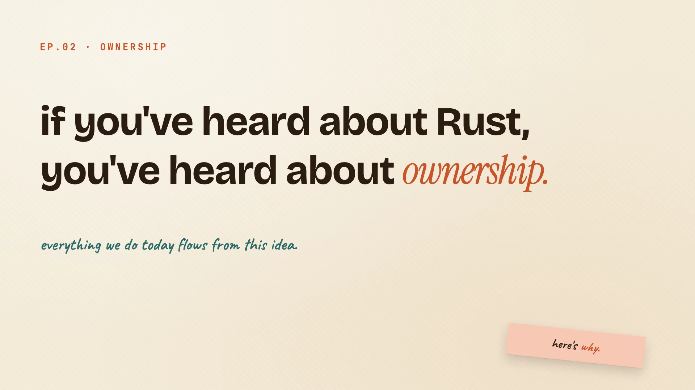
If you've heard anything about Rust, you've heard about ownership. It's the one idea the whole language is built on, and the part that scares people off. Good news: it's a handful of rules, and once they click, the rest of Rust follows.
What is ownership?
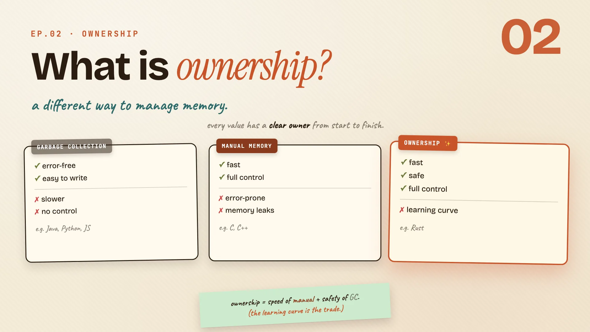
Ownership is just how Rust manages memory. Every value has a clear owner, and the compiler checks the rules while you write the code, not while it runs.
Most languages pick one of two strategies. Rust picks a third:
| Strategy | The trade | Examples |
|---|---|---|
| Garbage collection | easy and safe, but slower and less control | Java, Python, JS |
| Manual memory | fast with full control, but error-prone | C, C++ |
| Ownership | fast, safe, full control. costs a learning curve | Rust |
You get the speed of manual memory with the safety of a garbage collector. The price is the learning curve you're paying right now.
Remember: ownership = the speed of manual, the safety of GC. the learning curve is the trade.
Where data lives
Book · §4.1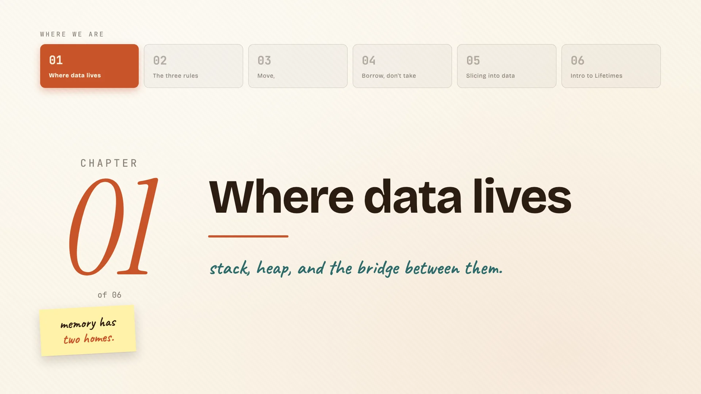
Stack, heap, and the bridge between them. Which home your data lives in decides almost everything about ownership.
Stack vs heap
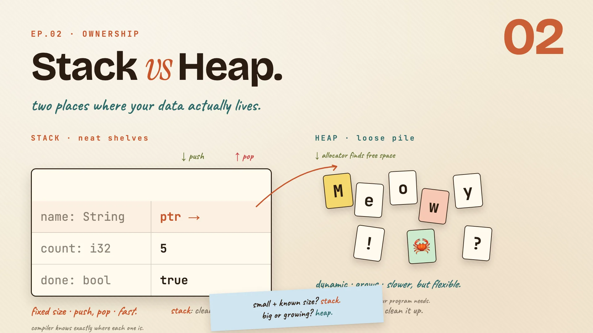
Your program keeps memory in two places, and they behave very differently.
- The stack is a stack of plates. You push values on top and pop them off the top, last in first out. It holds small things whose size is known when you write the code: numbers, booleans, simple structs. Fast, because the position is fixed.
- The heap is the messy room. The allocator finds free space and hands back a pointer. The pointer sits on the stack, the data sits on the heap. It holds things that can grow while the program runs: text, lists, anything whose size you don't know up front.
The part that matters for ownership:
- Stack data is cleaned up automatically when its scope ends.
- Heap data needs an owner to clean it up. That is the entire reason ownership exists.
Remember: small + known size? stack. big or growing? heap.
The three rules
Book · §4.1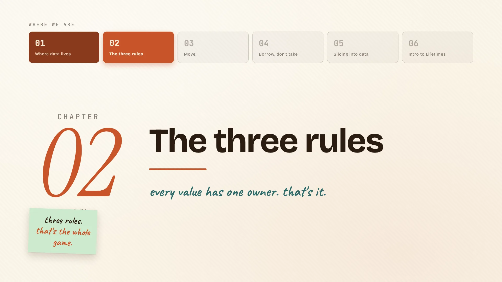
Every value has one owner. That's the whole game. Three short rules, and everything else in Rust is the compiler enforcing them.
The three rules
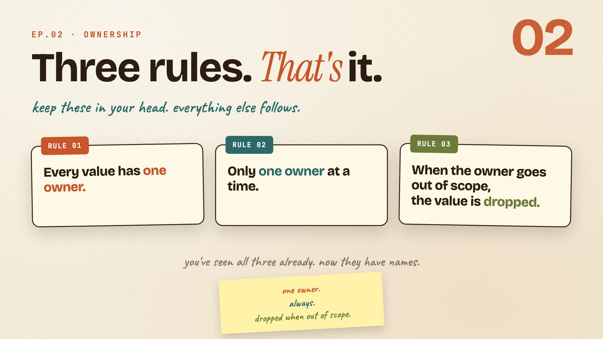
If you remember nothing else from this episode, remember these. They're what the compiler actually checks.
- Every value has one owner. An owner is just the variable that holds the value.
- Only one owner at a time. A value can move from one variable to another, and ownership moves with it. Never two owners at once.
- When the owner goes out of scope, the value is dropped. "Dropped" means Rust runs the cleanup and frees any heap memory, automatically. No garbage collector, no manual
free.
You've already seen all three. The stack-versus-heap cleanup was rule three working quietly. Now the rules have names.
Remember: one owner. always. dropped when it goes out of scope.
Move, copy, hand off
Book · §4.1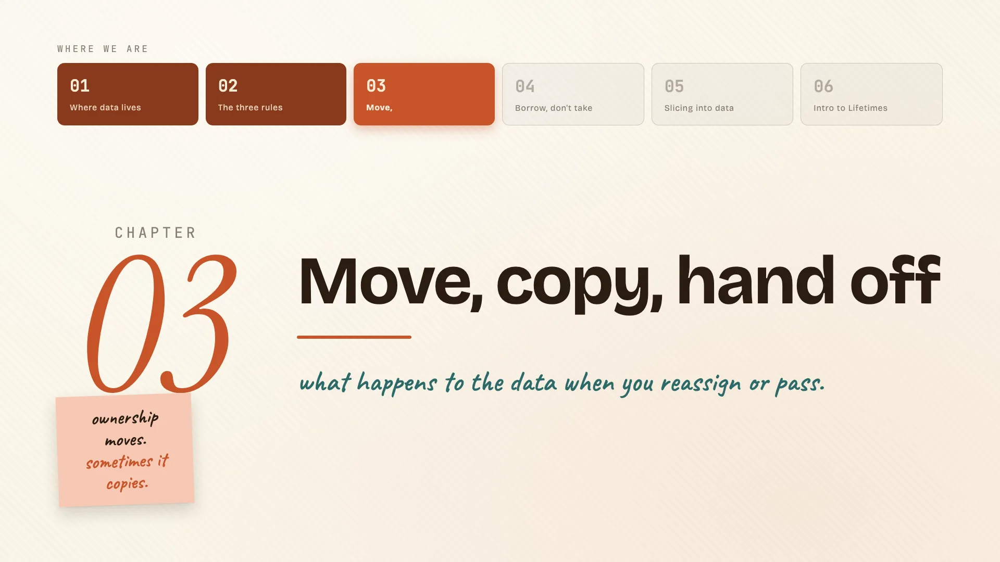
What happens to the data when you reassign it, or pass it to a function. Sometimes it moves. Sometimes it copies.
It moved
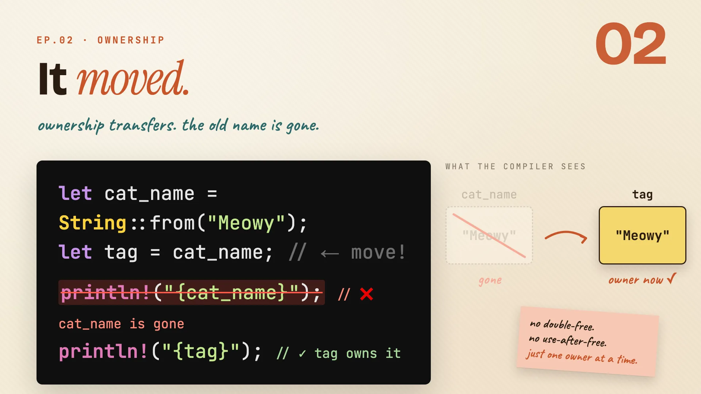
A String lives on the heap: the letters on the heap, a pointer to them on the stack. Watch what happens when you assign it to another variable.
let cat_name = String::from("Meowy");
let tag = cat_name; // move!
println!("{cat_name}"); // cat_name is gone
println!("{tag}"); // tag owns it now
- In most languages,
let tag = cat_namewould copy. In Rust it's a move: ownership transfers fromcat_nametotag. - The heap data isn't copied, only the pointer on the stack moves over.
- Use
cat_nameafter the move and the compiler stops you, at compile time, before the program runs.tagworks, it's the new owner.
Moves rule out two classic bugs for free: double-free (freeing the same memory twice) and use-after-free (reading memory after it's freed). One owner at a time, so neither can happen.
Remember: ownership transfers. the old name is gone.
Two escape hatches
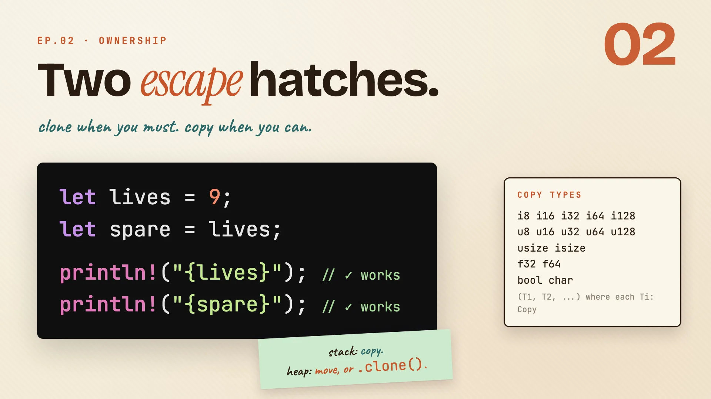
The move broke cat_name. What if you need both? Two ways out, depending on where the data lives.
Clone makes a deep copy of the heap data. You call it by hand, so the cost is visible:
let cat_name = String::from("Meowy");
let tag = cat_name.clone();
println!("{cat_name}"); // still works
println!("{tag}"); // its own copy
Copy is for stack-only data. Small fixed-size values are cheap to duplicate, so Rust just copies the bits, no .clone() needed:
let lives = 9;
let spare = lives;
println!("{lives}"); // works
println!("{spare}"); // works
The Copy types are anything purely on the stack: all integer and float types, bool, char, and tuples where every piece is also Copy.
Remember: stack types copy. heap types move, or
.clone()on purpose.
Across the function boundary
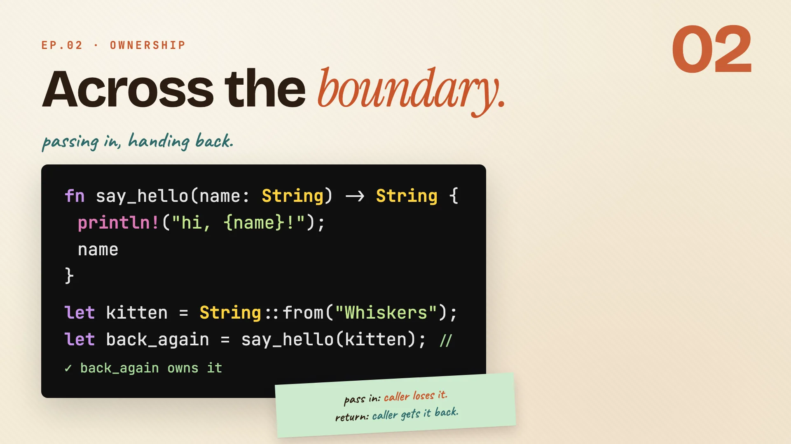
Moves aren't just about let. They happen when you pass a value to a function too.
fn say_hello(name: String) -> String {
println!("hi, {name}!");
name
}
let kitten = String::from("Whiskers");
let back_again = say_hello(kitten); // back_again owns it
- Calling
say_hello(kitten)moveskitteninto the function'snameparameter. Same mechanic as before. - Use
kittenafter the call? Compile error. - But the function returns the
String, so ownership transfers back out.back_againis the new owner.
Remember: pass in, the caller loses it. return it, the caller gets it back.
Borrow, don't take
Book · §4.2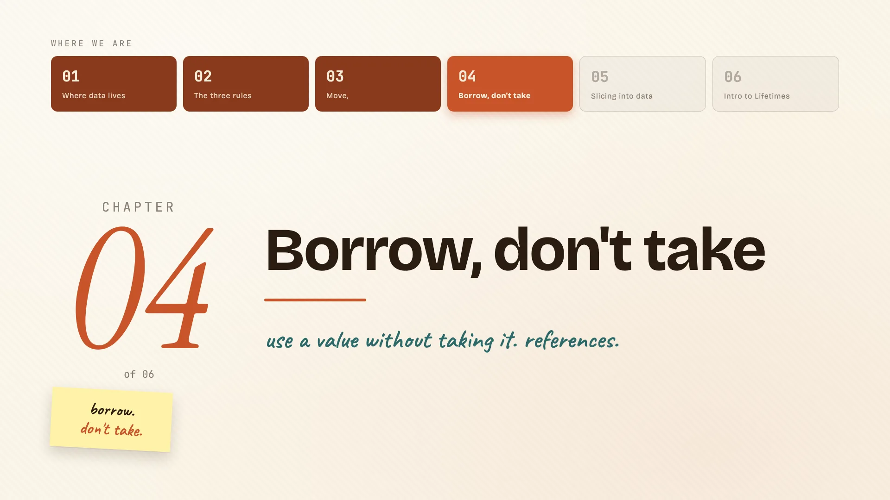
Use a value without taking ownership of it. That's what references are for.
Borrow, don't take
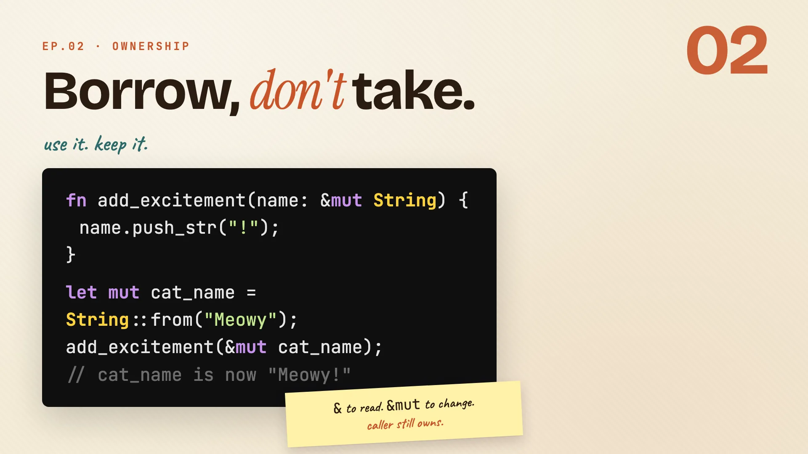
Sometimes a function needs to read or change a value, but you want to keep ownership in the caller. Moving would lose it. Cloning would be wasteful. Pass a reference instead.
A shared reference (&) is read-only:
fn count_letters(name: &String) -> usize {
name.len()
}
let cat_name = String::from("Meowy");
let n = count_letters(&cat_name); // cat_name still owned by the caller
A mutable reference (&mut) can change the value:
fn add_excitement(name: &mut String) {
name.push_str("!");
}
let mut cat_name = String::from("Meowy");
add_excitement(&mut cat_name); // now "Meowy!"
&shared: read-only. Many readers can share the same value at once, because none of them changes it.&mutmutable: read and write, but only one at a time. No sharing.
Remember:
&to read,&mutto change. the caller still owns it.
The two borrow rules
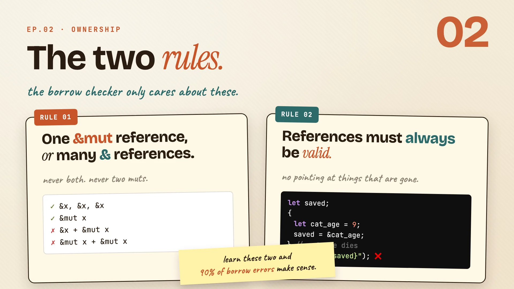
The borrow checker enforces reference safety with just two rules. Learn these and most borrow errors start to make sense.
Rule 1: one &mut, or many &. Never both.
&x, &x, &x // ok: many readers
&mut x // ok: one writer
&x + &mut x // no
&mut x + &mut x // no
This stops two writers clashing, or a reader seeing a half-finished change.
Rule 2: references must always be valid. A reference to something that's gone is a dangling reference, and Rust won't let you make one:
let saved;
{
let cat_age = 9;
saved = &cat_age;
} // cat_age dies here
println!("{saved}"); // won't compile
Remember: learn these two and 90% of borrow errors make sense.
Slicing into data
Book · §4.3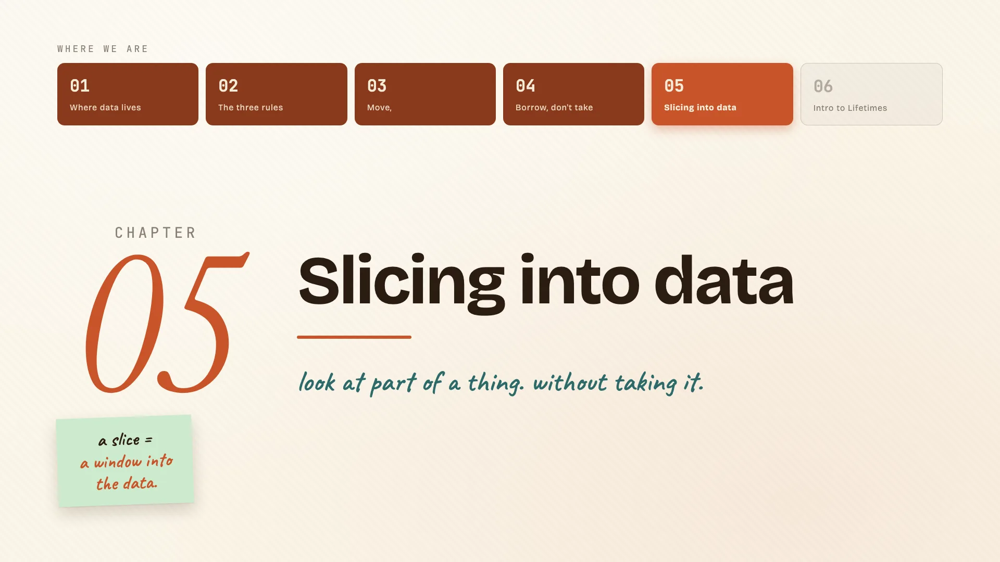
Look at part of a thing without taking it. Slices are references with bounds.
A slice of the whole
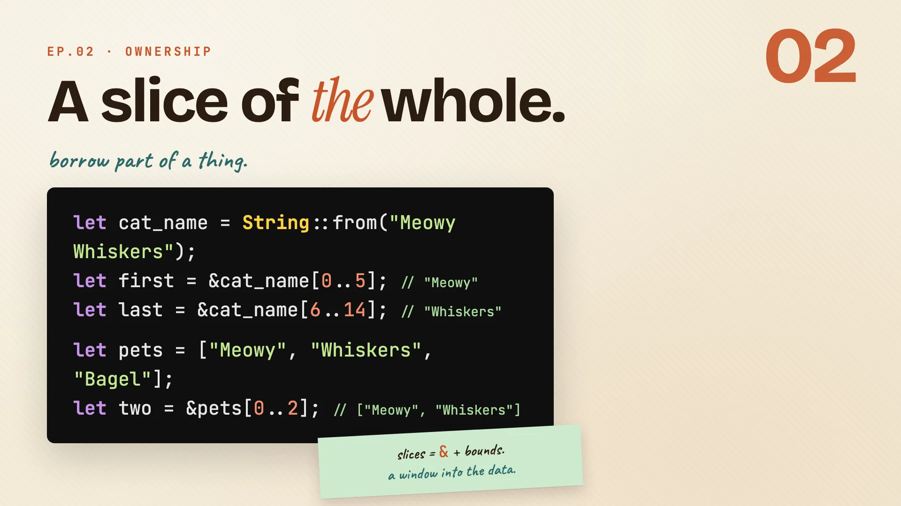
Sometimes you only want part of a value, not the whole thing. That's a slice: a reference to a range.
let cat_name = String::from("Meowy Whiskers");
let first = &cat_name[0..5]; // "Meowy"
let last = &cat_name[6..14]; // "Whiskers"
let pets = ["Meowy", "Whiskers", "Bagel"];
let two = &pets[0..2]; // ["Meowy", "Whiskers"]
- A slice is a reference, not a copy. Two indices: where it starts, where it ends.
- The same
&x[start..end]syntax works on arrays too. - Slices follow the borrow rules: because they point into the original, the original can't disappear while the slice is alive.
Remember: a slice =
&plus bounds. a window into the data.
Pick the right string type
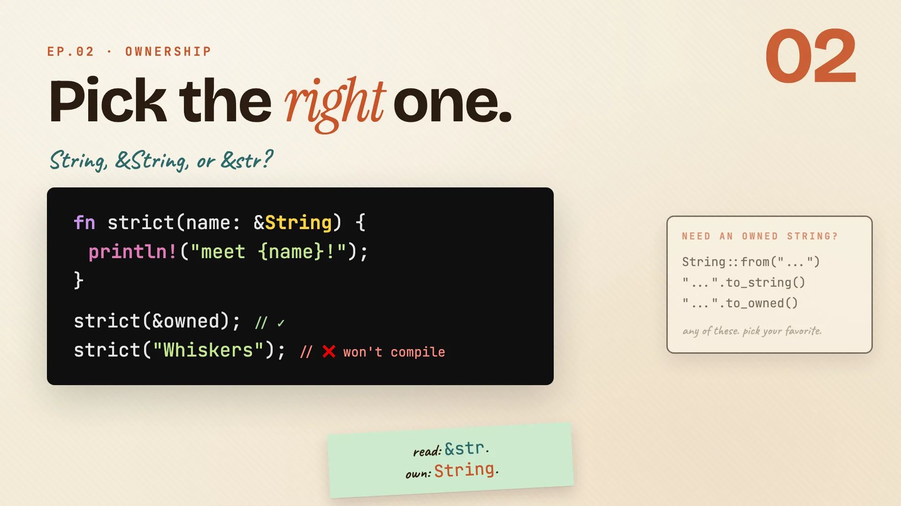
What type should a function take for a string parameter? Quick refresher: String is the owned, growable, heap type. &str is a reference to string data (a slice).
Take &str and you accept both:
fn flexible(name: &str) {
println!("meet {name}!");
}
let owned = String::from("Meowy");
flexible(&owned); // a String reference works
flexible("Whiskers"); // a &str literal works directly
Take &String and you lock yourself in:
fn strict(name: &String) {
println!("meet {name}!");
}
strict(&owned); // ok
strict("Whiskers"); // won't compile: a literal isn't an owned String
Need an owned String later? Convert with String::from, .to_string(), or .to_owned(). All three do the same thing.
Remember: take
&strto read. takeStringonly when you need to own it.
Intro to lifetimes
Book · §10.3 (preview)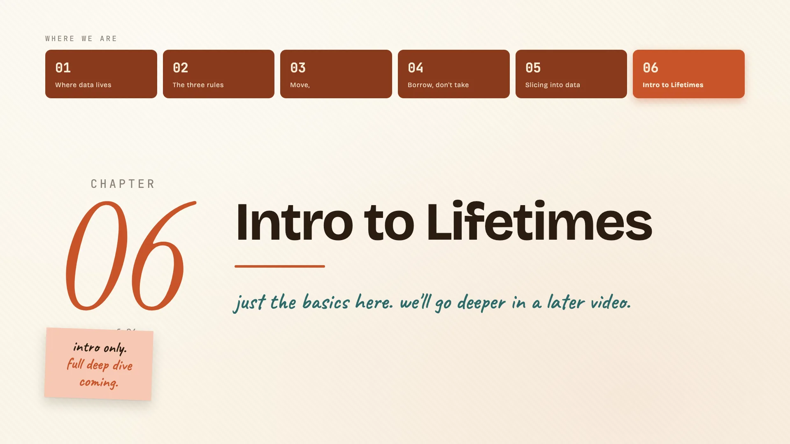
Just the basics here. The full deep dive is episode 06. For now: a lifetime is how long a reference is allowed to stick around.
What's a lifetime?
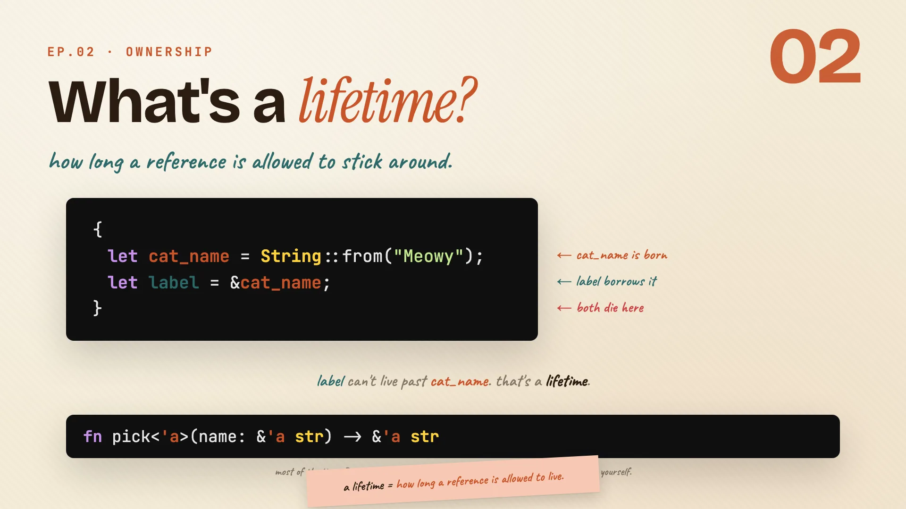
Remember rule two, references must always be valid? That rule has a name: a lifetime. Every reference has one, and it's the span of code where the reference is allowed to exist.
{
let cat_name = String::from("Meowy");
let label = &cat_name;
}
cat_nameis born,labelborrows it, and both go out of scope at the closing brace.labelcan't live pastcat_name. Same idea as the dangling reference from the borrow checker, now it has a name.
Sometimes Rust can't work the relationship out on its own, so you label it:
fn pick<'a>(name: &'a str) -> &'a str
'a is just a name. Here it says the input and the output share the same lifetime. Most of the time Rust figures this out for you. Episode 06 covers writing them by hand.
Remember: a lifetime = how long a reference is allowed to live.
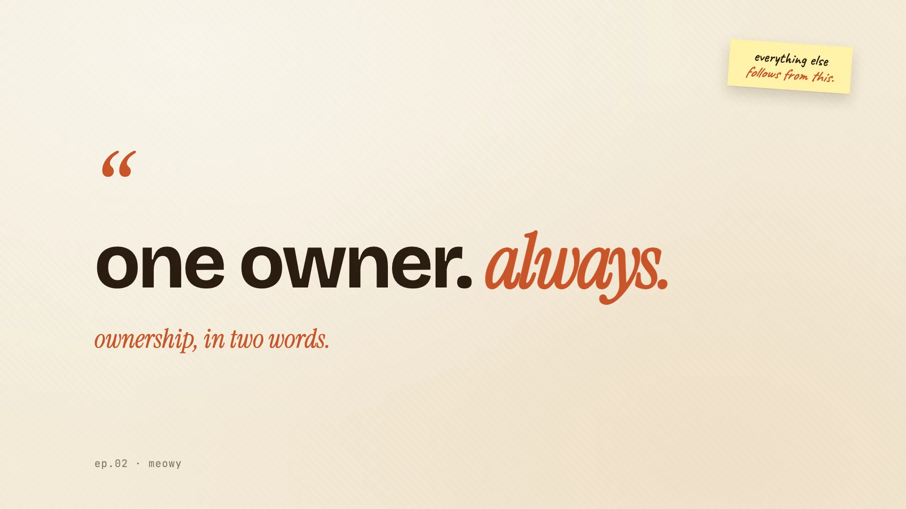
The whole episode in three words:
One owner. Always. Everything else in Rust follows from this.
Cheatsheet recap
One line per idea, in order. Skim this when you just need the reminder.
| Idea | Remember |
|---|---|
| What is ownership? | ownership = the speed of manual, the safety of GC. the learning curve is the trade. |
| Stack vs heap | small + known size? stack. big or growing? heap. |
| The three rules | one owner. always. dropped when it goes out of scope. |
| It moved | ownership transfers. the old name is gone. |
| Two escape hatches | stack types copy. heap types move, or .clone() on purpose. |
| Across the function boundary | pass in, the caller loses it. return it, the caller gets it back. |
| Borrow, don't take | & to read, &mut to change. the caller still owns it. |
| The two borrow rules | learn these two and 90% of borrow errors make sense. |
| A slice of the whole | a slice = & plus bounds. a window into the data. |
| Pick the right string type | take &str to read. take String only when you need to own it. |
| What's a lifetime? | a lifetime = how long a reference is allowed to live. |
Practice: Rustlings
06_move_semantics, 04_primitive_types.